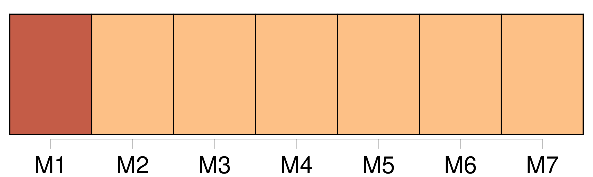
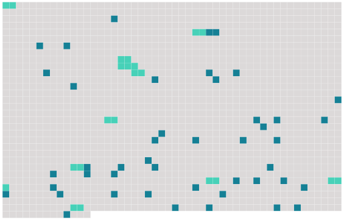

Longueur nb maillons : 55 mentions |
  |
[mon amant] est mort dans ma chambre... [8 phrases] près de [lui] [3 phrases]
» [4 phrases] Je [l'] aimais, je [l'] aimais éperdument, comme une insensée, depuis six mois. [3 phrases]
La bonne, effarée, était assise par terre au haut de l'escalier, avec une bougie allumée à son côté, n'ayant pas osé demeurer près [du mort] [2 phrases] Le lit fripé, meurtri, défait, restait ouvert, semblait attendre ; un drap traînait jusqu'au tapis ; des serviettes mouillées, dont on avait battu les tempes [du jeune homme] , gisaient à terre à côté d'une cuvette et d'un verre. [1 phrases]
« Tout de [son] long, sur le dos, au milieu de la chambre, [le cadavre] était étendu. « Je m'approchai ; je [le] considérai ; je [le] tâtai ; j'ouvris les yeux ; je palpai les mains, puis, me tournant vers les deux femmes qui grelottaient comme si elles eussent été gelées, je leur dis : « Aidez -moi à [le] porter sur le lit.
» Alors, j'auscultai le coeur et je posai une glace devant la bouche ; puis je murmurai : « C'est fini, habillons [-le] bien vite. [5 phrases] « Sitôt que l'horrible toilette fut terminée, je considérai notre oeuvre et je dis : « Il faudrait [le] repeigner un peu. [2 phrases] « Et tout à coup, lâchant ce qu'elle tenait aux mains, elle saisit la tête inerte de [son amant] , et regarda longuement, désespérément cette face morte qui ne lui sourirait plus ; puis, s'abattant sur [lui] , elle [l'] étreignit à pleins bras, en [l'] embrassant avec fureur. [1 phrases] Puis, s'approchant de l'oreille, comme s' [il] eût pu l'entendre encore, comme pour balbutier le mot qui fait plus ardentes les étreintes, elle répéta, dix fois de suite, d'une voix déchirante : « Adieu, [chéri] [5 phrases] J'ordonnai : « Portons [-le] dans le salon.
Nous [le] prîmes tous trois, et, [l'] ayant emporté, je [le] fis asseoir sur un canapé, puis j'allumai les candélabres. [9 phrases] Qu'y a-t [-il] ?? [2 phrases] J'étais resté tard à bavarder chez vous avec votre femme et [notre ami] [qui] m'avait amené dans [sa] voiture. Voilà qu' [il] s'est affaissé tout à coup, et depuis deux heures, malgré nos soins, [il] demeure sans connaissance. [1 phrases] Aidez -moi donc à [le] faire descendre ; je [le] soignerai mieux chez [lui] [2 phrases] « Lorsque nous fûmes devant la porte, je redressai [le cadavre] et je [lui] parlai, [l'] encourageant pour tromper [son] cocher. --« Allons, [mon brave ami] , ce ne sera rien ; [vous] vous sentez déjà mieux, n'est -ce pas?? Du courage, voyons, un peu de courage, [faites] un petit effort, et c'est fini.
» [4 phrases]
Tout le long de la route, [le mort] me retomba sur l'oreille droite. « Quand nous fûmes arrivés chez [lui] , j'annonçai qu' [il] avait perdu connaissance en chemin. J'aidai à [le] remonter dans [sa] chambre, puis je constatai le décès ; je jouai toute une nouvelle comédie devant [sa] famille éperdue. |
 |
La ressource peut être téléchargée sur la page Ortolang
Si vous avez des questions ou vous voyez des erreurs, merci d'envoyer un mail à silvia.federzoni89@gmail.com
Site développé par S. Federzoni (contact)